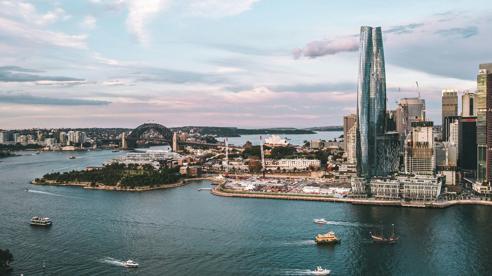
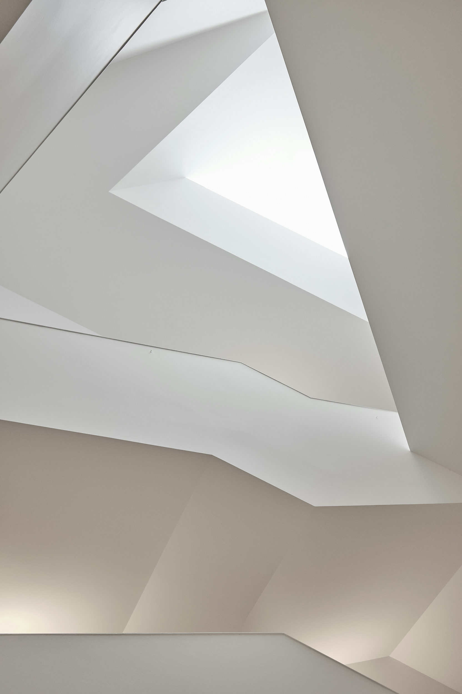

A boutique family office for established family wealth across Singapore and Australia.


Cedars Woods began in 2022. Its founders kept meeting families whose wealth sat across borders, with one set of advisers in each country and nobody holding the full picture.
Today, we give these families a single team that knows their affairs in both markets and keeps every part of them moving together. We work with high-net-worth families and individuals across Singapore and Australia, many of them carrying wealth built over a business lifetime or passed between generations.
What we set out to build is a relationship a family can lean on for the long run. We measure ourselves by whether a family is better off for knowing us, and by whether the children and grandchildren are served as well as the people who first sat down with us.
We are a boutique firm, owned entirely by our principals. That independence keeps our counsel answerable to the family in front of us. We can be candid about an investment we would avoid, and we are free to bring in the best specialists for the task at hand.

Our approach to capital favours prudence and preservation. We position family portfolios to endure across decades and look to both public and private markets for opportunities that suit a family's appetite for risk.
At Cedars Woods, discretion is an active operating principle, and we protect our clients' privacy completely. We also think in generations, steadying a family through significant life transitions and weighing the long view in every decision. That patience, paired with advice a family can trust to be objective, is what keeps families with us through the years.
We see a family's giving as part of looking after them well, and we help direct it where they want it to go. The firm gives its own support too. We back organisations doing good across Singapore and Australia, several of which our families know and give to alongside us.